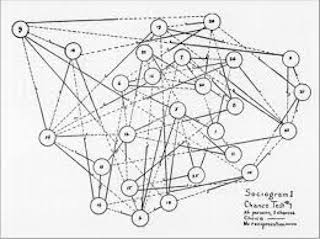
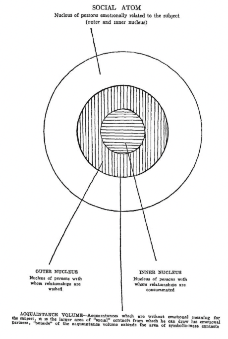

1 Introduction to Networks
What are Networks?
Networks are a way of thinking about the world that shifts our attention from individual entities to the relationships between them. Rather than asking what something is, network analysis asks how it is connected — and what those connections imply.
The nodes in a network can be almost anything: people, organisations, countries, genes, web pages, neurons. What unites them is the presence of ties — relationships, interactions, flows — that link one node to another. These ties interlink through shared nodes, creating chains and paths that connect parts of a system indirectly. This is part of what makes networks so powerful as an analytical concept: indirect connection provides a mechanism by which distant parts of a system can influence one another in ways that are invisible if we study actors in isolation.
When we talk about social networks specifically, nodes are typically active agents — individuals, teams, firms, cities — connected by social relationships: friendship, collaboration, communication, trade, trust, conflict. Networks of this kind operate at multiple levels simultaneously. At the dyad level, we study pairwise relationships: do actors who share business ties also develop affective ones? At the node level, we examine individual positions: do people with more connections tend to fare better in job markets? At the network level, we ask structural questions: do tightly connected networks diffuse information faster than sparse ones?
A central theoretical claim runs through nearly all of network science: an actor’s position in a network shapes the constraints and opportunities they encounter. Structure is not merely descriptive — it is causally consequential. The same logic applies at the collective level. A sports team of talented individuals may still underperform if collaboration structures are poor. An organisation may fail to innovate not because its members lack creativity, but because information cannot flow across structural holes between teams.
Crucially, absence carries meaning too. Gaps between otherwise dense clusters — what Burt famously called structural holes — can be as consequential as ties themselves. The broker who spans a gap between two disconnected groups holds a position of informational and strategic advantage that no attribute-level analysis would reveal.
A Brief Intellectual History

Network analysis as a distinct scientific enterprise grew from contributions across multiple disciplines: graph theory and topology from mathematics, kinship systems from anthropology, and theories of social groups and process from sociology and psychology. Its modern form is often traced to Jacob Moreno’s work in the first half of the 20th century (1934, 1951), who defined the study of social relations as sociometry and invented the Sociogram — a visual representation of relational structure, as well as the Social Atom model.
Constructing a social atom involves using concentric circles to map varying degrees of relational proximity. The individual occupies the central nucleus, while the immediate surrounding layer contains intimate bonds like family and close friends. The outer ring encompasses the broader social network, including professional colleagues and acquaintances.

The field developed steadily across the twentieth century, with important contributions from sociology, political science, public health, and computer science. Interest exploded from the 1990s onwards, driven by three converging forces: influential new theories of network structure (small worlds, scale-free networks, preferential attachment); dramatic advances in computational power that made large-scale network analysis tractable; and the development of statistical models that moved the field beyond description toward formal inference.